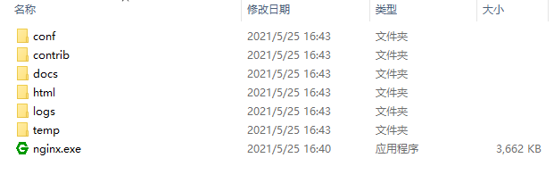
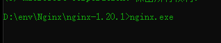
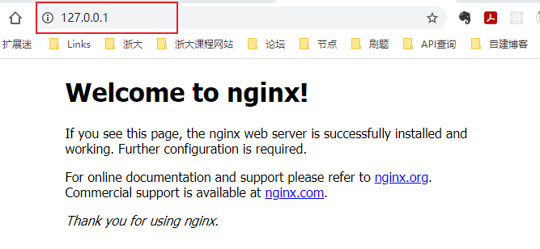
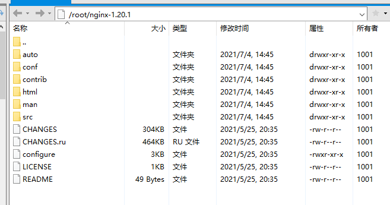
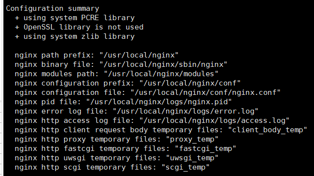
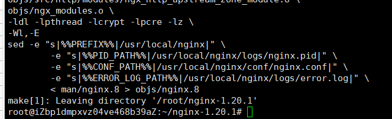
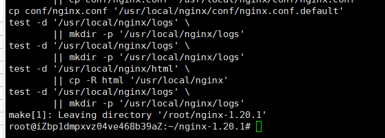

iphash 对客户端请求的 ip 进行 hash 操作，然后根据 hash 结果将同一个客户端的 ip 请求发给同一台服务器进行处理
动静分离：样式那些静态文件可以单独提出来，将其做缓存操作，提高资源的响应速度
安装步骤
Windows下安装
1、下载解压

2、直接运行

3、浏览器直接输：127.0.0.1:80（或者你改的其他端口）

Linux 下安装
1、下载解压

2、手动编译安装
1 2 3
./configure make make install



提示缺少 库
1 2 3 4
./configure: error: the HTTP rewrite module requires the PCRE library. You can either disable the module by using --without-http_rewrite_module option, or install the PCRE library into the system, or build the PCRE library statically from the source with nginx by using --with-pcre=<path> option.
解决方法：
1
sudo apt-get install libpcre3 libpcre3-dev -y
其他错误
1 2 3 4
./configure: error: the HTTP gzip module requires the zlib library. You can either disable the module by using --without-http_gzip_module option, or install the zlib library into the system, or build the zlib library statically from the source with nginx by using --with-zlib=<path> option.